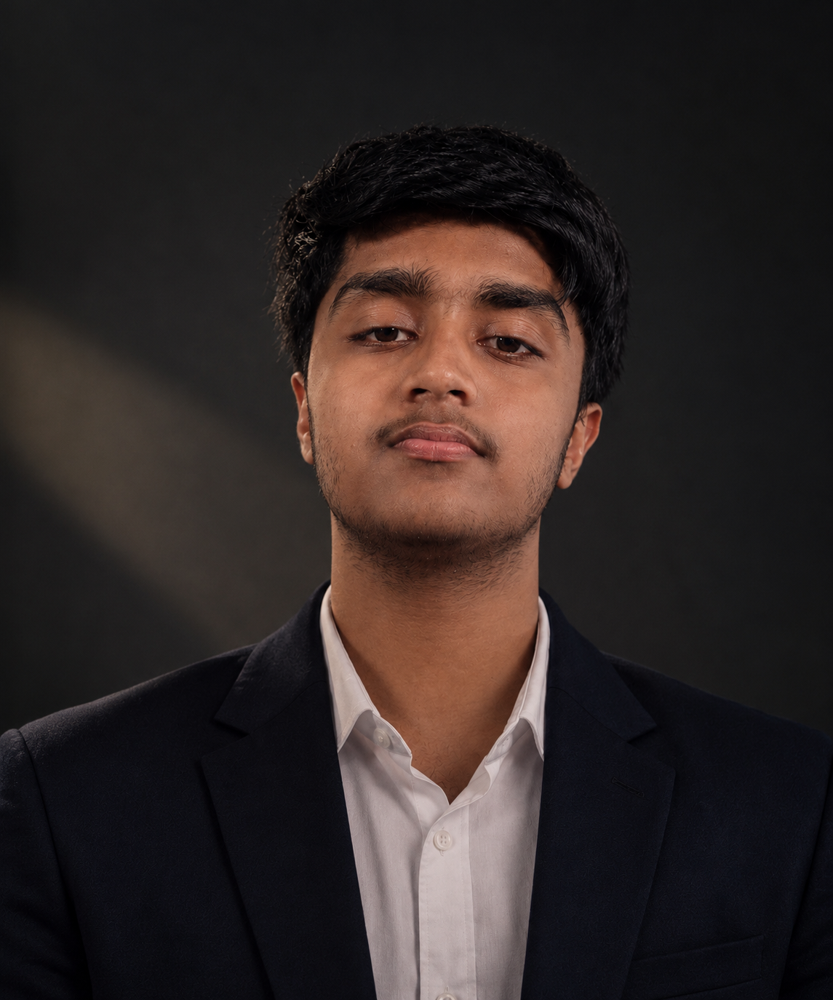

01 / SPORT
Competitive spirit
Discipline and pace, built through sport.
Welcome to my portfolio—a snapshot of the work, learning, and experiences shaped by strategy, teamwork, and purposeful design. From the track to the tech lab, I bring focus, curiosity, and a collaborative mindset to every challenge.

A portfolio built around the things that keep me moving: learning deeply, showing up for a team, and turning ideas into meaningful outcomes.
Welcome! Here you’ll find a curated collection of experiences reflecting a passion for strategy, teamwork, and purposeful design.
Much like the dedication required on the field, every project represents a commitment to practice, execution, and turning complex challenges into impactful results. Balancing the fast pace of sports with academic growth has shaped a versatile approach to problem-solving.
This portfolio celebrates the evolution of skills and a collaborative mindset—from early concepts to fully realized experiences.
Discipline and pace, built through sport.
Exploring the logic behind intelligent systems.
Making ambitious ideas happen as a team.
I move between the stadium track, the tech lab, and the open road—with focus, energy, and a willingness to learn.
Hey, I’m Gagan Reddy. 👋 I live life at full throttle, moving constantly between sport, technology, and the outdoors.
As a competitive track athlete, badminton player, and occasional marathon runner, I thrive on intensity and strategic pacing. Sports have built the discipline and focus that drive everything I do. On weekends, I head out with friends for rugged hill treks and long, scenic bike rides.
When I’m not chasing new horizons outside, I’m studying Artificial Intelligence and Machine Learning at BGS College of Engineering. I love the mathematics behind advanced algorithms and the possibility of connecting computational intelligence with real-world systems.
Building community fuels me, too. As a professional event organizer for my club and a volunteer, I enjoy turning big ideas into seamless experiences—managing logistics, stepping up when a team needs leadership, and creating momentum together.
Building an academic base in intelligent systems while developing practical strengths through sport and shared work.
BGS College of Engineering
Sports, event leadership, and volunteering build resilience, collaboration, and thoughtful execution.
Have an idea, an opportunity, or a team looking for an extra set of hands? I’d be glad to hear from you.
Send me an email ↗